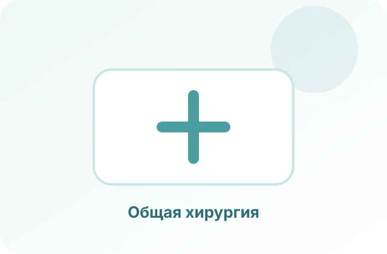
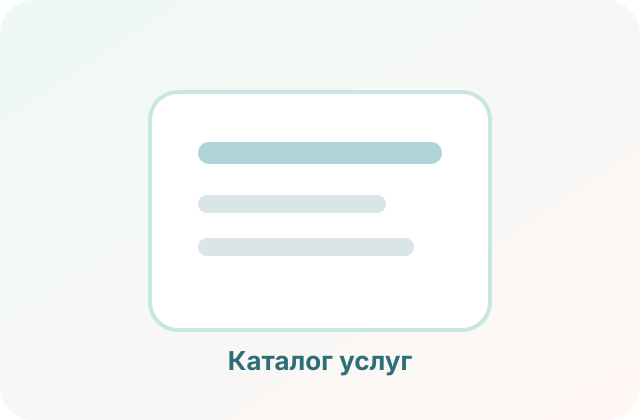
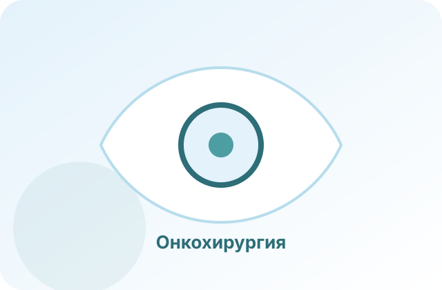

Первичный прием хирурга
Осмотр, разбор жалоб и понятный план дальнейших действий.
Подробнее
Документы, обследования и рекомендации после консультации.
Каталог
Здесь будет полный перечень консультаций и операций. Сейчас — аккуратный каркас для будущего заполнения.

Общая хирургия

Осмотр, разбор жалоб и понятный план дальнейших действий.
Документы, обследования и рекомендации после консультации.
Проверка восстановления, перевязки и рекомендации.
Контрольные визиты и оценка динамики после вмешательства.
Оценка необходимости диагностики, наблюдения или удаления.
Точный список процедур уточним после данных врача.
Хирургическая онкология

Разбор диагноза, обследований и предложенного плана.
Лучше взять заключения, анализы и снимки.
Обсуждение показаний, подготовки, рисков и наблюдения.
Формулировки уточним под реальные зоны специализации.
Понятный следующий шаг после консультации.
Дополнительные обследования, консультации или подготовка к операции.
Пластическая хирургия
Запрос, ожидания, ограничения и безопасность.
Оценка анатомических особенностей и противопоказаний.
Обследования, сроки и реалистичный план.
Без обещаний идеального результата, только после очного приема.
Ограничения, контрольные визиты и рекомендации.
Сроки зависят от типа вмешательства.